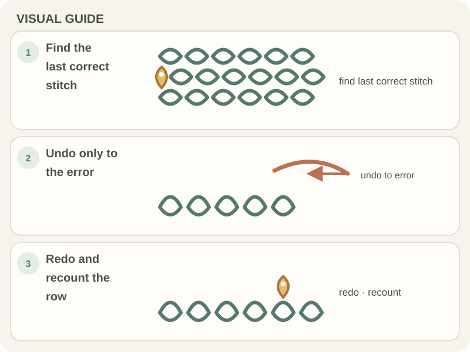

Patterns & Troubleshooting · Beginner guide
How to Fix Common Crochet Mistakes
When a crochet mistake appears, stop at the last correct stitch, identify the problem, and undo only as far as needed.

Common issues include a missed edge stitch, an accidental increase, a split strand, or a loop pulled too tight. The fix depends on the stitch and pattern.
Before you begin
Keep a blunt tapestry needle, stitch markers, and the pattern nearby. Mark the first correct row or round before undoing stitches.
Step-by-step instructions
- Stop and locate the last stitch that matches the pattern.
- Count stitches or inspect the fabric to identify whether one was added, missed, or worked in the wrong place.
- Remove stitches one at a time until you reach the error, keeping the active loop secure.
- Redo the section and recount before continuing.

How to check your work
The corrected section should match the pattern count and fabric direction. Check both sides before working more rows.
Common beginner problems
- A stitch is too tight to undo: Loosen the working loop gently with the hook; do not yank the yarn.
- I cannot find the missed stitch: Compare the row with the pattern and look for the first gap in the top Vs.
- The yarn has split: Back up to the split section and work through the full strand, not between plies.
Undoing safely
Pull out only the stitches needed to reach the error. Secure the live loop with a marker or spare hook before setting the work down so it does not unravel further.
Frequently asked questions
What does “frog” mean?
It is informal crochet language for undoing stitches; the term is a pun on “rip it.”
Should I undo the whole row?
Only if the mistake affects the whole row. Find the last correct stitch and undo from there.
How do I keep the loop from unraveling?
Place it on the hook or secure it with a removable stitch marker.